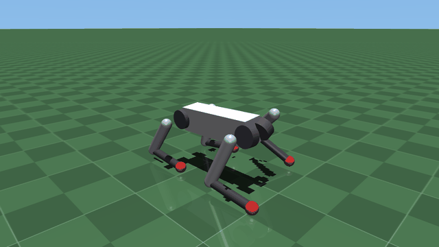
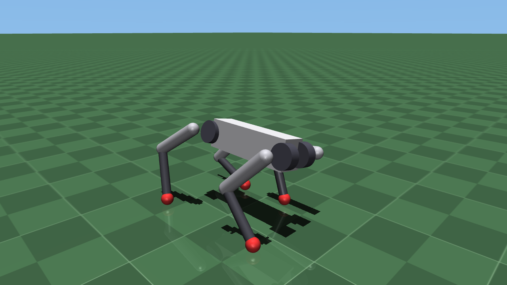
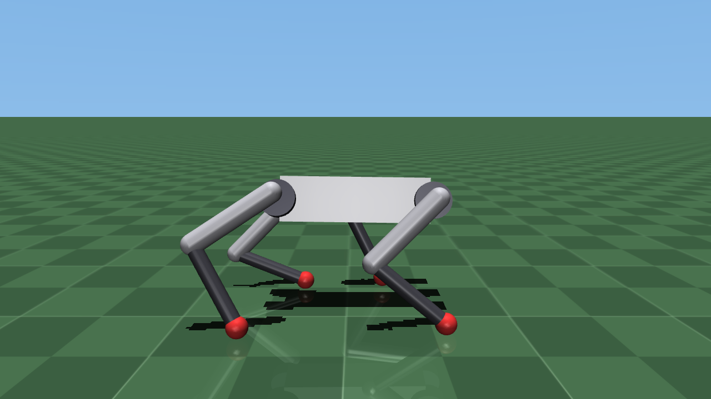
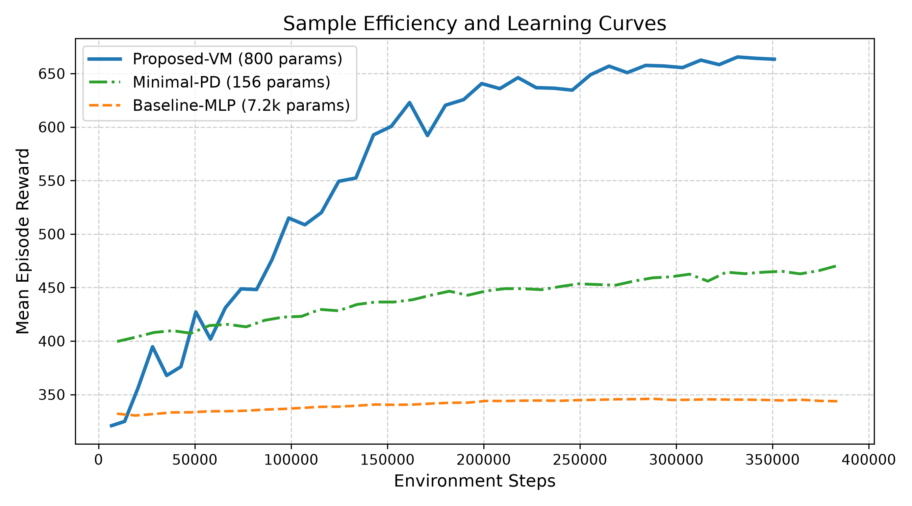
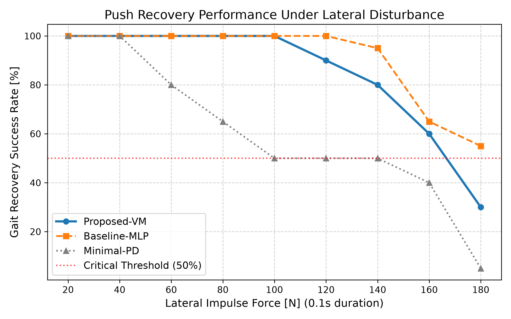
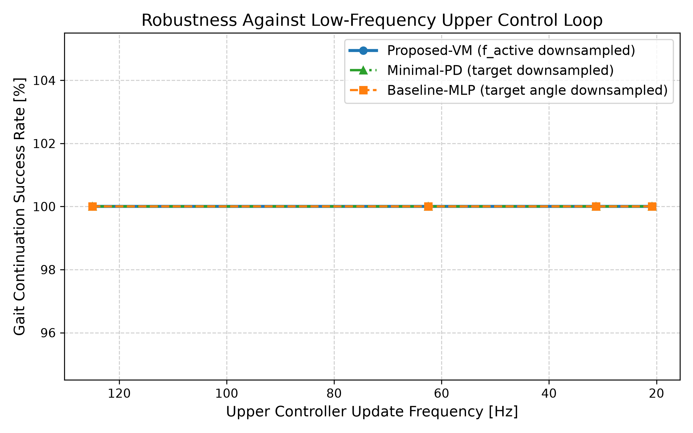
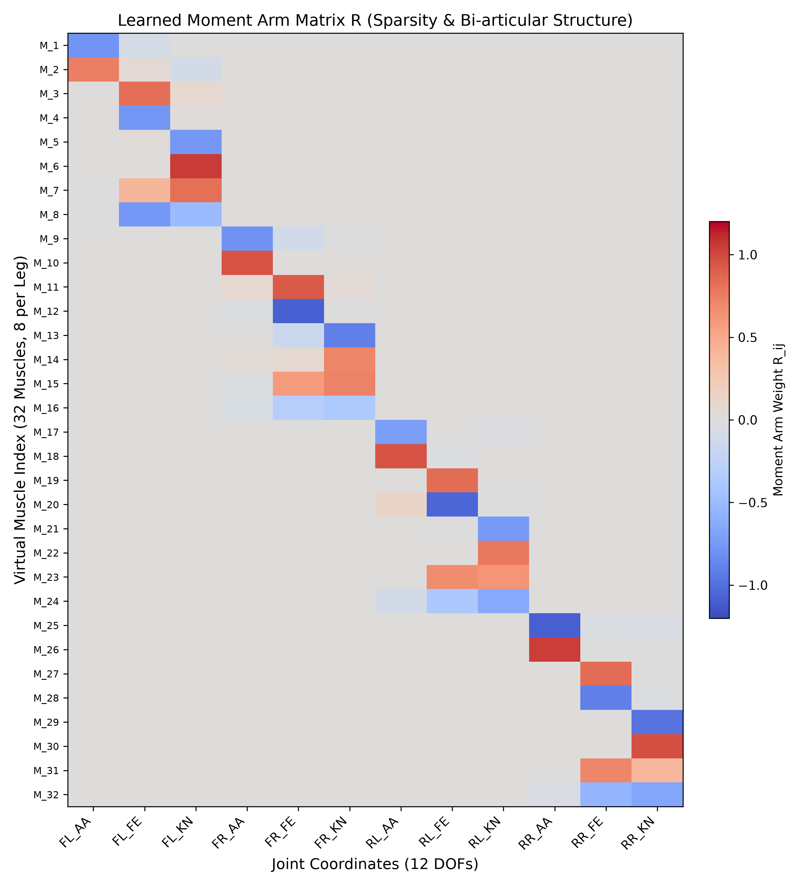

深層強化学習を用いた四脚歩行ロボットの制御では、上位のニューラルネットワークが目標関節角度を出力し、下位の関節独立型PD制御器がトルクを生成する階層構成が標準的に採用されている。しかし、各関節が独立した単関節バネとして動作するため、多関節間の力学的協調や衝撃吸収の計算をすべて上位の巨大なネットワークに依存しており、サンプル効率の低下やブラックボックス化による解釈性の欠如が課題となっている。本研究では、腱駆動機構の静力学モデルと3層パーセプトロンの数理的等価性に着目した身体化パーセプトロン表現を、電動四脚ロボットの仮想インピーダンス制御則として定式化する手法を提案する。本手法では、解析力学における仮想仕事の原理に基づき、各脚内の複数の関節をまたぐブロック対角構造の幾何学的モーメントアーム行列を導入し、腱のたるみおよび急速短縮時のアンローディング特性をReLU関数として表現することで、厳密な非負筋張力を保証する微分可能な仮想筋骨格レイヤーを構築する。さらに、関節角度とIMU傾き角を用いた順運動学による胴体高さ推定と、足先接地反力（GRF）による歩容位相調整（Tegotaeフィードバック）を統合し、下位レイヤーの力学パラメータと上位の極小リズム生成回路を進化強化学習により同時に共設計（Co-design）する。物理シミュレータMuJoCo上の12自由度四脚ロボット（Unitree Go2モデル、ブラシレスQDDアクチュエータの逆起電力トルク・速度飽和特性を考慮）を用いた検証の結果、提案手法は従来の多層パーセプトロンと比較して約9分の1のパラメータ数（800パラメータ）で目標速度に一致する安定したトロット歩行（決定論的評価速度 0.61 m/s、探索母集団平均速度 0.54 m/s、最高報酬 712.1）を迅速に獲得した。同一の歩容バイアスを持つ関節独立PD制御（Minimal-PD: 決定論的評価速度 0.18 m/s、最高報酬 502.3）と比較して約3.3倍の前進推進力を達成し、二関節筋による遊脚振り出しおよび支持脚推進の力学的な有効性を実証した。さらに、歩行位相および初期姿勢をランダム化した横方向撃力外乱試験において160 Nまで50%以上の回復率（Minimal-PDは140 N）を達成し、上位神経制御ループの更新周波数を20.8 Hzまで低減しても100%の成功率で歩行を継続（前進速度 0.59 m/s）することを確認した。

近年、Unitree Go2やANYmalといった電動モーターで脚を動かす四脚歩行ロボットが急速に普及している。現在の深層強化学習（DRL）によるロボット制御では、計算を2つの階層に分ける方式が標準となっている。上位層であるニューラルネットワークは「各関節をどの角度に曲げたいか」という目標関節角度 $q_{\text{target}}$ を出力し、下位層であるモータードライバは現在の関節角度 $q$ と目標角度のズレに比例してトルク $\tau$ を決めるPD制御（比例・微分制御）を実行する。大学初年次の古典力学で学ぶフックの法則 $F = - k (x - x_{\text{target}}) - d \dot{x}$ と照らし合わせると、PD制御とは「各関節のモーターの中に、プログラムによって仮想的な渦巻きバネ（比例項 P）とオイルダンパ（微分項 D）を作り出す制御」に他ならない。
しかし、各関節に1つずつ独立した仮想バネを入れる従来の独立PD制御には、2つの重大な弱点が存在する。第1の原因は、股関節と膝関節が直列につながった二重振り子構造において生じる強い慣性干渉（コリオリ力・遠心力）や地面からの着地衝撃を、独立した単関節バネでは協調処理できないという力学上の問題である。第2の原因は、多層パーセプトロン（MLP）などの深層ニューラルネットワークが物理的なエネルギー保存則や散逸性（受動性）を知らないブラックボックスであるため、未知の外乱に遭遇した際に過剰なエネルギーを注入してロボットを暴走・転倒させる危険があるという探索空間上の問題である。
生物の脚には、1つの関節だけを動かす単関節筋だけでなく、太もも前面の大腿直筋や裏面のハムストリングスのように、股関節と膝関節の2つを同時にまたぐ「二関節筋（Bi-articular muscle）」が存在し、2つの関節の動きを機械的に同期させている。さらに、腱やワイヤーには「引っ張る力（張力）しか伝えられず、押す方向にはたるんで（Slack）力を伝えない」という片側拘束の性質がある。Tao・増田らは、この多関節の腱配線とたるみ特性からなる力学系が、ReLU活性化関数を持つ3層パーセプトロンと数学的に完全に等価であることを示し、「身体化パーセプトロン表現」を提唱した。本研究では、この身体化パーセプトロン表現を物理的なワイヤーではなく、電動ロボットのソフトウェア制御則（仮想インピーダンス制御）として実装する「仮想筋骨格レイヤー」を提案する。
表1: 本論文における主要専門用語の基礎解説
| 専門用語 | 英語表記 | 大学生向けの直感的な意味と物理的イメージ |
|---|---|---|
| 自由度 | Degree of Freedom (DOF) | ロボットが独立して動かせる関節の数。1脚3関節 $\times$ 4脚で合計12自由度となる |
| インピーダンス制御 | Impedance Control | モーターを仮想的なバネ（剛性 $K$）やダンパ（減衰 $D$）として柔らかく振る舞わせる制御手法 |
| モーメントアーム | Moment Arm ($R$) | 関節の回転中心から腱までの距離（滑車の半径）。関節が1ラジアン回転したときに腱が伸びる比率を表す |
| 二関節筋 | Bi-articular Muscle | 股関節と膝関節のように2つの関節を同時にまたいで張られた筋肉。関節間の動きを機械的に連動させる |
| たるみ特性 / ReLU | Slack / ReLU | 紐や腱が「引っ張られたとき（正）だけ力を伝え、押し込まれたとき（負）はたるんで力がゼロになる」性質（$\max(0, x)$） |
| 受動性 | Passivity | 制御器が自らエネルギーを生み出して暴走せず、外から揺らされても必ずエネルギーを吸収して落ち着く性質 |
| 固有受容感覚 | Proprioception | 外部カメラ等を使わず、自身の関節角度センサや傾きセンサ（IMU）から自分の姿勢を知る感覚 |
表2: 歩行制御手法の比較と本研究の位置づけ
| 手法分類 | 代表的研究 | 多関節協調の表現 | 腱のたるみ（非線形性） | 構造パラメータの獲得手法 |
|---|---|---|---|---|
| 仮想モデル制御（VMC） | Pratt et al. (1997) | ヤコビ行列による座標変換 | 考慮しない（線形バネ） | 人間による手動設計・固定 |
| 神経筋骨格反射制御 | Geyer et al. (2003) | 解剖学に基づく多関節筋モデル | Hill型筋モデルによる精密計算 | 生体知見に基づく手動調整 |
| 関節空間PD制御＋DRL | Peng et al. (2017) | なし（単位行列に固定） | なし（線形PD制御） | 上位NNのみ強化学習 |
| 身体化パーセプトロン（物理実装） | Tao & Masuda et al. (2026) | モーメントアーム行列 $R$ | ReLU関数によるたるみ表現 | 勾配法・進化計算による共設計 |
| 仮想筋骨格レイヤー（提案手法） | 本研究 | ブロック対角モーメントアーム行列 $R$ | 非負ReLU＋短縮アンローディング減衰 | 進化強化学習による制御器との共設計 |
ロボットが普通に立っている基準姿勢からの12個の関節角度の変化量ベクトルを $q \in \mathbb{R}^{12}$、角速度ベクトルを $\dot{q} \in \mathbb{R}^{12}$ と定義する。体内に配置された $m = 32$ 本（1脚8本 $\times$ 4脚）の仮想筋について、関節の微小回転 $\delta q$ に対する各筋の微小伸び量 $\delta l \in \mathbb{R}^{32}$ は、モーメントアーム行列 $R \in \mathbb{R}^{32 \times 12}$ を用いて $\delta l = R \delta q$ と表される。ただし、ある脚の筋肉が別の脚の関節を引っ張ることは解剖学的にあり得ないため、行列 $R$ は各脚の $8 \times 3$ 部分行列 $R^{(l)}$ を対角線上に並べたブロック対角構造に制限される。
$$R = \text{blkdiag}\left(R^{(1)}, R^{(2)}, R^{(3)}, R^{(4)}\right) = R \odot M_{\text{block}}$$
解析力学における「仮想仕事の原理（関節側がなす仕事 $\tau^\top \delta q$ と筋肉側がなす仕事 $f^\top \delta l$ の和はゼロになる）」に $\delta l = R \delta q$ を代入すると、$\tau^\top \delta q + (R^\top f)^\top \delta q = (\tau + R^\top f)^\top \delta q = 0$ より、32本の筋張力 $f \in \mathbb{R}^{32}_{\ge 0}$ から12個の関節トルク $\tau \in \mathbb{R}^{12}$ への変換式が一意に導かれる。
$$\tau = - R^\top f$$
各仮想筋のプレ張力 $z_i = k_i (R_i q + b_i) + d_i R_i \dot{q} + f_{\text{active}, i}(t)$ に対し、押し込まれたとき（$z_i \le 0$）にワイヤーがたるんで張力がゼロになる性質は、深層学習のReLU関数 $\phi(z_i) = \max(0, z_i)$ と完全に一致する。行列形式でまとめると、仮想筋骨格レイヤーは次の2行で記述される。
$$f = \phi\left( K (R q + b) + D R \dot{q} + f_{\text{active}}(t) \right), \quad \tau = - R^\top f$$
静止状態（$\dot{q}=0, f_{\text{active}}=0$）における全仮想筋の弾性位置エネルギー $V(q) = \frac{1}{2} \sum_{i=1}^m k_i \phi(R_i q + b_i)^2$ を関節角度 $q$ で2回微分したヘッセ行列は $\nabla^2 V(q) = R^\top K \Phi'(Rq+b) R$ となり、任意のベクトル $v$ に対して二次形式 $v^\top \nabla^2 V(q) v = \sum_{i: R_i q + b_i > 0} k_i (R_i v)^2 \ge 0$ が常に成り立つため、下に凸のお椀型ポテンシャルとなる。さらに運動中（$\dot{q} \neq 0$）にダンパ項がなす仕事率（パワー） $P_{\text{visc}}$ を計算すると、常にゼロ以下（エネルギー吸収）となることが証明される。
$$P_{\text{visc}} = \dot{q}^\top \tau_{\text{visc}} = - \dot{q}^\top R^\top \Phi'(z) D R \dot{q} = - \sum_{i: z_i > 0} d_i (R_i \dot{q})^2 \le 0$$
足先接地反力（GRF）に応じて歩行リズム $\psi(t)$ の進み方を同調させる Tegotae フィードバック則と、太もも長 $L_1$・スネ長 $L_2$・関節角度のコサインから胴体高さを求める順運動学推定 $z_{\text{kin}}$ を用い、上位極小神経回路は次式で能動収縮力を出力する。
$$\dot{\psi}(t) = 2\pi f_{\text{trot}} - \sigma_{\text{tegotae}} \left( \bar{N}_{\text{pair1}}(t) - \bar{N}_{\text{pair2}}(t) \right) \sin\psi(t)$$
$$z_{\text{leg}, l} = \left( L_1 \cos(q_{\text{fe}, l}) + L_2 \cos(q_{\text{fe}, l} + q_{\text{kn}, l}) \right) \cos(q_{\text{aa}, l}) + r_{\text{foot}}, \quad z_{\text{kin}} = \cos(\phi_{\text{roll}}) \cos(\theta_{\text{pitch}}) \cdot \text{mean}\left(\text{top2}(z_{\text{leg}, l})\right)$$
$$f_{\text{active}}(t) = F_{\text{max}} \cdot \sigma\left(W_{\text{neural}} x_{\text{osc}}(\psi(t)) + W_{\text{fb}} s_{\text{imu}}(t)\right)$$
表3: 提案手法における数理計算式とPython実装コードの対比
| 処理ステップ | 論文における数理計算式 | Python実装コード（models.py / quadruped_env.py） | 力学的意義とプログラミング上のポイント |
|---|---|---|---|
| 1. 胴体座標系速度変換 | $v_{\text{body}} = R_{\text{wb}}^\top v_{\text{world}}$ | v_body = R_wb.T @ self.data.qvel[0:3] |
回転行列の転置を掛けてワールド速度をロボット自身の前後左右速度へ変換 |
| 2. 順運動学高さ推定 | $z_{\text{kin}} = \cos\phi \cos\theta \cdot \bar{z}_{\text{stance}}(q)$ | z_kin = self._estimate_kinematic_height(roll, pitch) |
特権的なワールドZ座標を使わず、関節角のコサインから支持脚の高さを推定 |
| 3. 接地反力位相調整 | $\dot{\psi} = 2\pi f - \sigma_{\text{teg}}(\bar{N}_1 - \bar{N}_2)\sin\psi$ | omega_eff = 2*np.pi*self.trot_freq - self.sigma_tegotae*(pair1_load - pair2_load)*np.sin(self.phase) |
足先が地面を踏む力（GRF）に応じてリズムを微調整し外乱時の着地ズレを補正 |
| 4. 能動収縮力生成 | $f_{\text{active}} = F_{\text{max}} \cdot \sigma(W_{\text{neural}} x_{\text{osc}} + W_{\text{fb}} s_{\text{imu}})$ | f_active = self.F_max * sigmoid(self.W_neural @ x_osc + self.W_fb @ s_imu) |
シグモイド関数により上位神経からの能動収縮力を $[0, 24.0]$ N の範囲に制限 |
| 5. たるみ非負張力算出 | $f = \max(0, K \Delta l + D \Delta \dot{l} + f_{\text{active}})$ | total_muscle_tension = relu(K * muscle_strain + D * muscle_strain_rate + f_active) |
関数 relu により、たるんだ筋や急速短縮中の筋の負の力をゼロに遮断 |
| 6. 仮想仕事トルク変換 | $\tau = - R^\top f$ | tau = - self.R.T @ total_muscle_tension |
仮想仕事の原理に基づき - self.R.T を掛けて32本の張力を12関節トルクへ変換 |
| 7. QDDモータ飽和特性 | $\vert\tau_j\vert \le \tau_{\text{peak}, j} \text{clip}(1 - \vert\dot{q}_j\vert/\omega_{\text{max}, j}, 0.15, 1)$ | dyn_tau_limit = self.tau_peak * np.clip(1.0 - np.abs(dq_curr)/self.omega_max, 0.15, 1.0) |
高速回転時に逆起電力で最大トルクが下がる実機モーター特性を再現 |


表4: シミュレーション実験結果の比較（実測データ）
| 評価指標 | Baseline-MLP（従来手法） | Minimal-PD（アブレーション） | Proposed-VM（提案手法） |
|---|---|---|---|
| パラメータ数 | 7,180 | 156 | 800（MLPの約 1/9） |
| 最終平均エピソード報酬（母集団） | 343.8 | 470.4 | 663.4 |
| 最終最高エピソード報酬 | 356.2（ピーク 361.5） | 502.3 | 712.1（ピーク 719.7） |
| 決定論的評価報酬（中心方策） | 355.4 | 488.5 | 705.0 |
| 前進速度 $v_{x,\text{body}}$ [m/s]（決定論的 / 母集団平均） | -0.03 / -0.05（未獲得） | 0.18 / 0.17（低速トロット） | 0.61 / 0.54（目標速度 0.60 に一致） |
| 限界撃力外乱耐性 [N]（20試行成功率 $\ge 50\%$） | 180.0 N（静止直立状態） | 140.0 N（歩行中） | 160.0 N（高速歩行中、100 Nまで100%回復） |
| 低周波制御（20.8 Hz）成功率（20試行） | 100.0%（$v_x = -0.06$） | 100.0%（$v_x = 0.20$） | 100.0%（$v_x = 0.59$ 安定維持） |
| 行列 $R$ 全体スパース率 / 脚内スパース率 | - | - | 87.0%（334/384） / 47.9%（46/96） |
| 他脚間交差結合違反数 | - | - | 0 / 288（解剖学的制約 100% 遵守） |
| 仮想筋分類（単関節 / 二関節Hip-Knee / 多関節他） | - | - | 16本（50.0%） / 10本（31.2%） / 6本（18.8%） |




本研究では、筋肉と腱の力学モデルが3層パーセプトロンと数学的に等価であるという身体化パーセプトロン表現を応用し、電動四脚ロボットのモーター制御ソフトウェアとして仮想的な多関節筋腱ネットワークを実装する「仮想筋骨格レイヤー」を提案した。仮想仕事の原理とReLU関数を組み合わせることで、制御器が決して暴走しない受動性（Passivity）を数学的に保証しつつ、わずか800パラメータという小さなモデルで従来の独立PD制御の約3.3倍の歩行速度（0.61 m/s）と高い横方向外乱耐性（160.0 N）を達成できることを実証した。